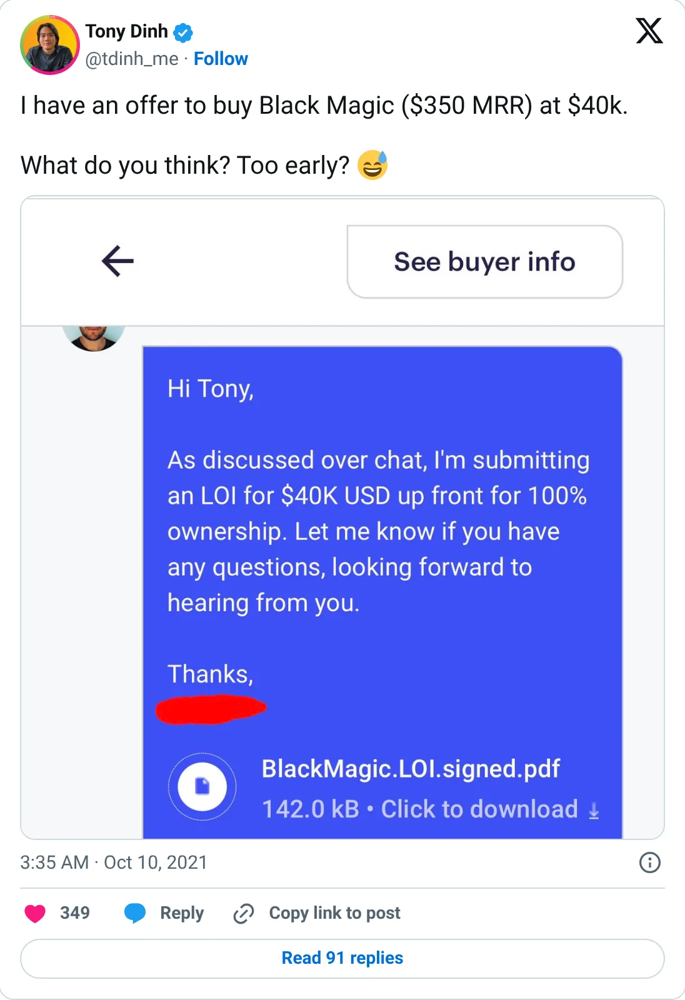
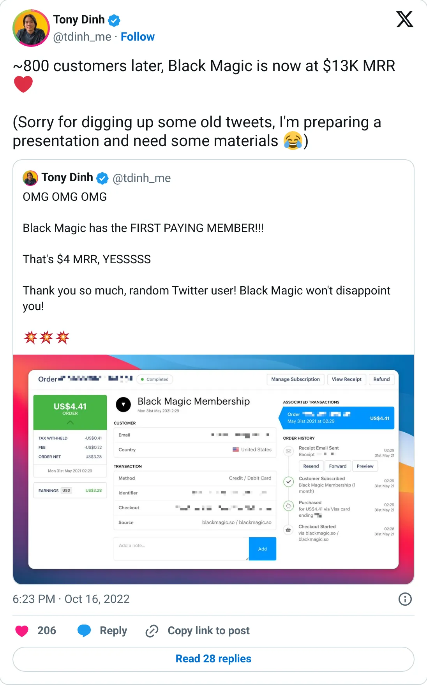

Not a pick
Black Magic
A real-looking company with a headline you should not plan against.
$13K MRR (Oct 2022)
Should you build this
The company may be real. The figure on the card is a peak, a stale year, a cash month, or an average. Black Magic's 2021–2022 posts are a genuine build in public: $350 MRR, $460, $2K, $5K, $6K with ~17% churn, $7K, then about 800 customers and $13K MRR on October 16, 2022. In May 2023 Tony wrote that a $42K a month X API price threatened the product. There is no newer revenue figure. The $13K was probably real on that day. It is a historical marker for a product the platform economics turned against.
Cited from the captured posts, shown below: the earliest captured post (Oct 10, 2021) is the source for “Got a $40K offer at $350 MRR”; the latest milestone (Oct 16, 2022) is the source for “~800 customers, $13K MRR”.
Posts this is based on

Got a $40K offer at $350 MRR
Open on X

~800 customers, $13K MRR
Open on X
What the product is
Twitter/X power-user browser extension (real-time follower insights, tweet analytics). Tony Dinh's breakout product before TypingMind.
⚠ Older: last figure Oct 2022. Then hit by X API pricing changes.